Making Your Own Coustom Card

Monster Card
represent monsters that players battle against each other or directly against either player during the Battle Phase. Monsters are the main focus of Yu-Gi-Oh!. Monster Cards are differentiated by their names, Type; Attribute; ATK; DEF; Level (or Rank or Link Rating). Monster Cards can be subdivided into.
- Normal Monsters: colored yellow, are Main Deck monsters with no monster effects. In the card description box (which contains the effect on Effect Monsters), Normal Monsters include a brief description of its lore. 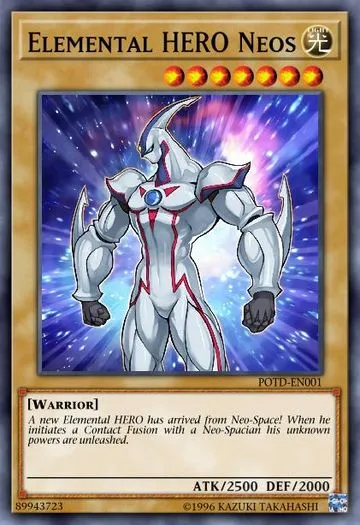
- Effect Monsters: are Monster Cards with an orange color border. Effect Monsters necessarily have at least one card effect or condition. 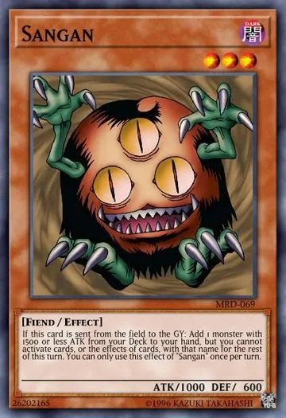
- Ritual Monsters: colored blue, are monsters that must be Special Summoned with a Ritual Spell Card.
Ritual Monsters are Special Summon-only monsters. This means that they cannot be Normal Summoned or Tribute Summoned from the hand and cannot be Special Summoned from the Graveyard or while banished unless they were first Ritual Summoned
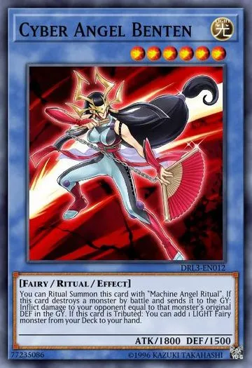
- Fusion Monsters: The color of their card frame is violet. These cards are placed in the Extra Deck.
To be properly Special Summoned, Fusion Monsters must first be Fusion Summoned (unless otherwise specified).
If they leave the Extra Deck without being properly Special Summoned, they cannot be Special Summoned while they are banished or in the Graveyard.
Most Fusion Monsters have a set of Fusion Materials, which are listed on the first line of the card's text. These are the materials used to perform the Summon of that monster.
Like other Extra Deck monsters, Fusion Monsters cannot exist in the hand or Main Deck (even with card effects). If a Fusion Monster would be moved to the hand or Main Deck, it is returned to the Extra Deck instead.
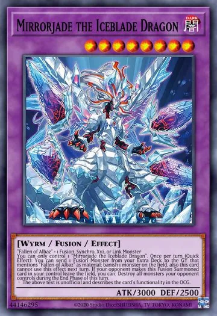
- Synchro Monsters: The color of their card frame is white. These cards are placed in the Extra Deck.
To be properly Special Summoned, Synchro Monsters must first be Synchro Summoned.
If they leave the Extra Deck without being Synchro Summoned, they cannot be Special Summoned while they are banished or in the Graveyard.
Like other Extra Deck monsters, Synchro Monsters cannot exist in the hand or Main Deck (even with card effects). If a Synchro Monster would be moved to the hand or Main Deck, it is returned to the Extra Deck instead.
The act of Summoning a Synchro Monster from the Extra Deck using a Tuner monster with additional non-Tuner monsters. During the Main Phase 1 or 2, the turn player can Synchro Summon a Synchro Monster from the Extra Deck by sending monsters they control to the Graveyard (at least 1 Tuner and 1 or more non-Tuner monsters), provided the total Level of those monsters matches exactly the Level of that Synchro Monster.
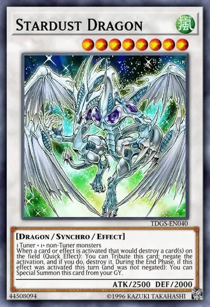
- Xyz Monsters: is a type of Monster Card that is colored black. They are stored in the Extra Deck.
Like other Extra Deck monsters, Xyz Monsters cannot exist in the hand or Main Deck (even with card effects). If an Xyz Monster would be moved to the hand or Main Deck, it is returned to the Extra Deck instead.
Like other Extra Deck monsters, if an Xyz Monster is not Xyz Summoned first, it cannot be Special Summoned from the Graveyard or while banished (unless it specifies another way to properly Special Summon it).
the act of Summoning an Xyz Monster from the Extra Deck using 2 or more monsters of the same Level as Xyz Materials, with those monsters also being the same Level as the Xyz Monster's Rank.
During the Main Phase, the turn player can Xyz Summon an Xyz Monster from the Extra Deck.
When an Xyz Monster is Xyz Summoned, the Xyz Materials are stacked and placed underneath the Xyz Monster Card.
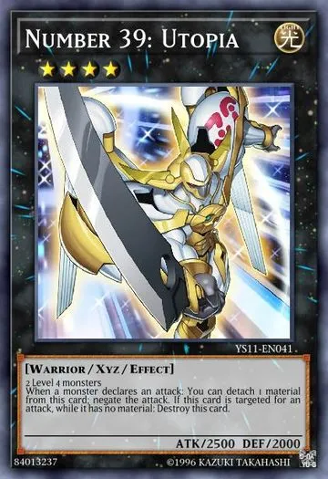
- Pendulum Monsters: is a type of Monster Card that is half green.
In addition to normal usages as Monster Cards, a Pendulum Monster can also be activated from the hand as a Spell Card in a Pendulum Zone; if there are Pendulum Monsters in both Pendulum Zones, the player can perform a Pendulum Summon.
So far, Normal, Effect, Ritual, Fusion, Synchro and Xyz Pendulum Monsters have been seen. Pendulum Monsters can also be Tuner, Flip and Spirit monsters.
Once per turn, during the Main Phase, while there are Pendulum Monsters in both Pendulum Zones, the turn player can perform a Pendulum Summon, Special Summoning multiple Monsters from their hand as well as Pendulum Monsters that are face-up in the Extra Deck at the same time, using the Pendulum Monsters' Pendulum Scales to determine the Levels of the monsters that can be Summoned
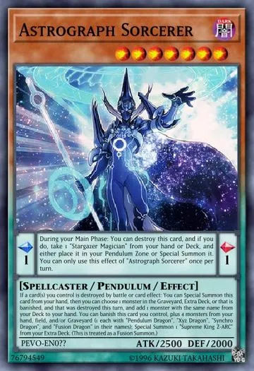
- Link Monsters: The color of their card frame is dark blue, which is similar to that of a Ritual Monster, but with a hexagonal pattern similar to a honeycomb structure.
These cards are placed in the Extra Deck. Like other Extra Deck monsters, Link Monsters cannot exist in either the hand or the Main Deck (even with card effects). If a Link Monster would be moved to the hand or Main Deck, it is returned to the Extra Deck instead.
If a Link Monster is not Link Summoned first, it cannot be Special Summoned from the Graveyard or while banished (unless it specifies another way to properly Special Summon it).
A Link Summon is the act of Summoning a Link Monster from the Extra Deck using the requisite number of Link Materials listed on its Link Rating. During the Main Phase, the turn player can Link Summon by sending the face-up Link Materials from their field to the Graveyard.
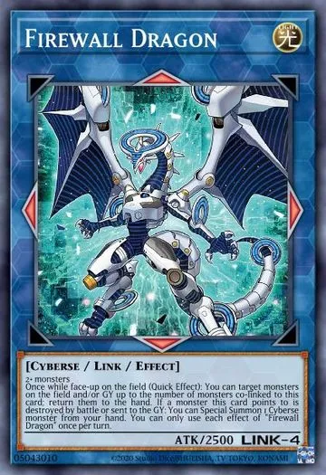
Spell Card
are cards with green-colored borders that have various effects to alter the play of the game.
Often, a Spell Card has a single effect to provide a bonus to the user or a weakness to the opponent.
Unlike Trap Cards, Spell Cards have the advantage of being able to be played without having to be Set first.
Spell Cards, except Quick-Play Spell Cards, may be activated during the same turn it was Set.
A player may activate and Set as many Spell Cards as they wish during their turn. All Spell Cards are Spell Speed 1
(can only be activated as Chain Link 1), with the exception of Quick-Play Spell Cards which are Spell Speed 2
(can be activated in response to Spell Speed 1 and 2 Chain Links). Spell Cards, except Quick-Play Spell Cards,
can only be activated during their possessor's Main Phase (except "Curse of Fiend"); Quick-Play Spell Cards can be activated from their possessor's
hand during their turn, or while Set on the field during either player's turn.
After activation, Spell Cards (with the exception of Continuous, Field and Equip Spell Cards) are sent to the Graveyard.
Spell Cards can be subdivided into.
- Normal Spell: is a Spell Speed 1 Spell Card, so it cannot chain to other effects, even those of other Normal Spell Cards,
but can be chained to by Spell Speed 2 or Spell Speed 3 cards.
The turn player may Set a Normal Spell Card and activate it on the same turn, which is useful if the player plans to use effects of cards that discard from your hand (such as "Card Destruction" and "Morphing Jar") to keep their useful Spell Cards from being discarded. Normal Spell Cards can only be activated during the turn player's Main Phase 1 and Main Phase 2,
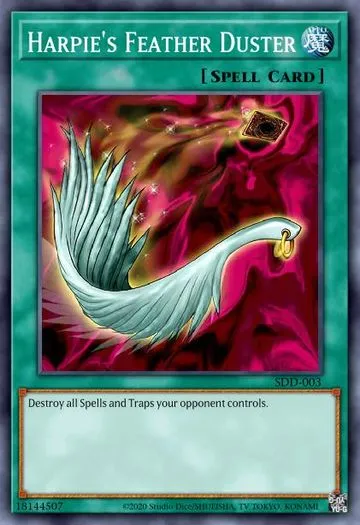
- Quick-Play Spell:are a type of Spell Card that are Spell Speed 2. The turn player can activate Quick-Play Spell Cards from their hand during any Phase of their turn; either player can activate Set Quick-Play Spell cards during any Phase in either player's turn, except during the turn they are Set. 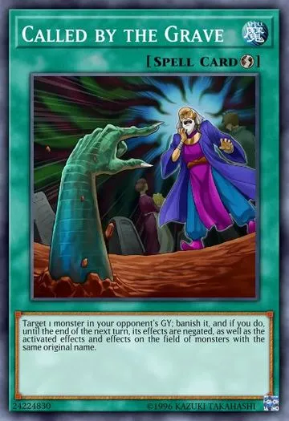
- Continuous Spell: is a Spell Speed 1 Spell Card that stays on the field once it is activated. 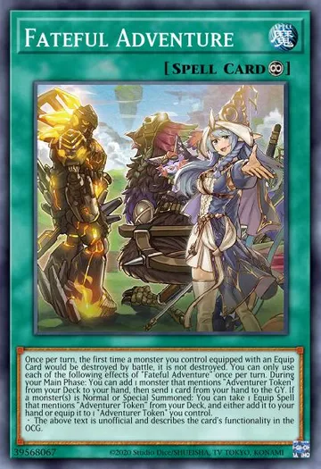
- Field Spell: have the advantage of being able to change the entire state of play for its controller's or for both players' side of the field. They are Spell Speed 1 and are placed on the Field Zone, apart from the Spell & Trap Zones. 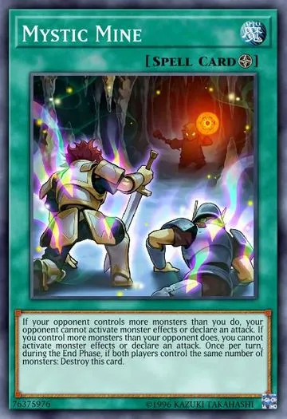
- Equip Spell: is a Spell Card that is a card that is equipped to a face-up monster on the field. Equip Spell Cards are a type of Equip Card; Equip Cards can also be Trap Cards or monsters that are treated as Equip Cards. 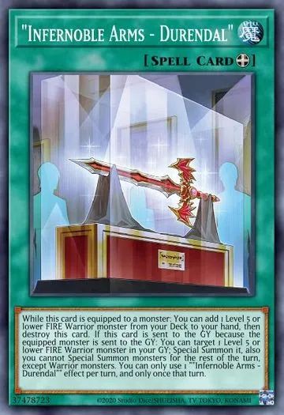
- Ritual Spell: are a type of Spell Card used to Ritual Summon Ritual Monsters. 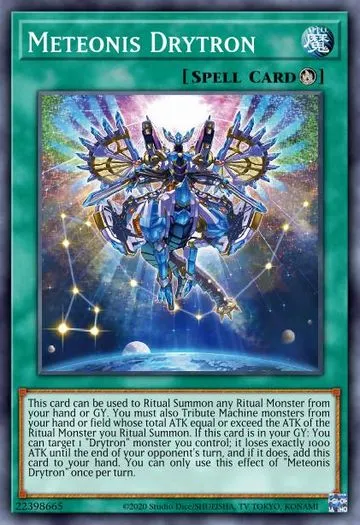
Trap Card
A Trap Card must first be Set and can only be activated after the current turn has finished. After that, it may be activated during either player's turn. Trap Cards are Spell Speed 2, with the exception of Counter Trap Cards, which are Spell Speed 3.
Trap Cards may be chained to Spell Cards, other Trap Cards, or to the effects of Effect Monsters.
Normal Trap Cards are Spell Speed 2. They can be activated during either player's turn as long as it wasn't set that turn.
The effects of certain Normal Trap Cards behave like Equip Cards, but the card is still considered a Normal Trap Card.
Continuous Trap Cards are also Spell Speed 2. Their effects are applied as long as they are face-up on the field.
Counter Trap Cards are a Spell Speed 3. Only other Counter Trap Cards can be chained to a Counter Trap Card.